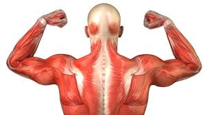

ऐच्छिक मांसपेशी

- ऐच्छिक मांसपेशी लेख में मानव शरीर से संबंधित उल्लेख है।
- ये पेशियाँ अस्थियों से जुड़ी रहती हैं। अतः इन्हें कंकाल पेशियाँ कहते हैं।
- ये पेशियाँ मनुष्य की इच्छा शक्ति के नियन्त्रण में रहती हैं। इसीलिए इन्हें ऐच्छिक पेशियाँ कहते हैं।
- इनमें आड़ी धारियाँ पायी जाती हैं। इसीलिए इन्हें रेखित पेशियाँ कहते हैं। प्रत्येक पेशी कोशिका में अनुदैर्घ्य रूप से व्यवस्थित पेशी तन्तुक पाए जाते हैं।
- प्रत्येक पेशी कोशिका बहुकेन्द्रीय होती है। प्रत्येक पेशी तन्तुक में एक्टिन तथा मायोसिन फिलामेन्ट पाए जाते हैं।
- अधिक व्यायाम या कार्य से इनमें लैक्टिक अम्ल का निर्माण हो जाता है जिससे थकान महसूस होने लगती है। ये पेशियाँ मुख्य रूप से हाथ, पैर, गर्दन, आँख आदि में पायी जाती हैं।
क्रियाविधि
ऐच्छिक पेशियाँ मस्तिष्क या रीढ़ रज्जु के नियन्त्रण में कार्य करती हैं। ये पेशियाँ कंकाल से जुड़ी होती हैं। इसीलिए इन्हें कंकालीय पेशियाँ भी कहते हैं। कंकाल पेशियों के द्वारा गति की क्रिया विधि को भुजा की पेशियों के सन्दर्भ में निम्न प्रकार स्पष्ट किया जा सकता है।
भुजा की कोहनी के ऊपरी भाग में दो तर्कुरूपी पेशियाँ पायी जाती हैं। ऊपर की ओर की द्विशिरस्का पेशी तथा नीचे की ओर त्रिशिरस्का पेशी होती है। ये पेशियाँ ऊपर की ओर कन्धे की अस्थि स्कैपुला से जुड़ी रहती है। द्विशिरस्का पेशी का निचला सिरा रेडियस से तथा त्रिशिरस्का का निचला सिरा अल्ना से जुड़ा रहता है। द्विशिरस्का पेशी के संकुचन तथा त्रिशिरस्का पेशी के शिथिलन से अग्रबाहु ऊपर उठती है तथा इनकी विपरीत गतियों से अग्रबाहु सीधी हो जाती है।
अतः ऐच्छिक पेशियाँ संकुचन तथा शिथिलन सम्भावित गतियाँ उत्पन्न करती हैं।